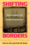

Browse
other Author lists:
A B C
D E F
G H I
J K L
M N O
P Q R
S T U
V W X
Y Z |
 |
The NFL
Critical and Cultural Perspectives
edited by Oates, Thomas P. and Zack Furness
Foreword by Michael Oriard
256 pp • 6x9 • Spring 2014
paper 978-1-4399-0958-4
cloth 978-1-4399-0957-7 |
 |
I
Can't Remember
Family Stories of Alzheimer's Disease
Smoller,
Esther Strauss, foreword by Kathleen O'Brien
136 pp • 7x10 • Fall 1997
cloth 978-1-56639-555-7
|
 |
The Muslim Question in Europe
Political Controversies and Public Philosophies
O’Brien, Peter
318 pp • 6x9 • Spring 2016
paper 978-1-4399-1277-5
cloth 978-1-4399-1276-8
|
 |
Harvey
and Jessie
A Couple of Radicals
O'Connor,
Jessie Lloyd, Harvey O'Connor and Susan M. Bowler
278 pp • Spring 1988
paper 978-0-87722-659-8
cloth 978-0-87722-519-5 |
 |
Critique
of Applied Ethics
Reflections and Recommendations
Edel,
Abraham, Elizabeth Flower and Finbarr W. O'Connor
288 pp • 6x9 • Spring 1994
paper 978-1-56639-158-0
cloth 978-1-56639-157-3 |
 |
Morality,
Philosophy, and Practice
Historical and Contemporary Readings and Studies
edited
by Edel, Abraham, Elizabeth Flower and Finbarr W. O'Connor
620 pp • Fall 1988
cloth 978-0-87722-591-1 |
 |
Environmental
Change
Federal Courts and the EPA
O'Leary,
Rosemary
280 pp • 5.5x8.25 • Fall 1993
paper 978-1-56639-396-6
cloth 978-1-56639-095-8
|
 |
Hoover
and the Un-Americans
The FBE, HUAC, and the Red Menace
O'Reilly,
Kenneth
354 pp • Spring 1983
cloth 978-0-87722-301-6 |
 |
No
Sword to Bury
Japanese Americans in Hawai'i during World War II
Odo,
Franklin S.
336 pp • 6x9 • Fall 2003
paper 978-1-59213-270-6
cloth 978-1-59213-207-2
|
|
Beyond
Employment
Time, Work, and the Informal Economy
Offe,
Claus and Rolf G. Heinze, translated by Alan Braley
248 pp • 6x9 • Spring 1992
cloth 978-0-87722-951-3 |
 |
Ethnicity and Inequality in Hawai’i
Okamura, Jonathan Y.
256 pp • 6x9 • Spring 2008
paper 978-1-59213-756-5
cloth 978-1-59213-755-8
|
 |
Cane
Fires
The Anti-Japanese Movement in Hawaii, 1865-1945
Okihiro,
Gary Y.
360 pp • 6x9 • Spring 1991
paper 978-0-87722-945-2
cloth 978-0-87722-799-1
|
 |
The
Nazi Census
Identification and Control in the Third Reich
Aly,
Götz and Karl Heinz Roth, foreword by Edwin Black, translated
by Assenka Oksiloff
192 pp • 5.5x8.25 • Spring 2004
paper 978-1-59213-259-1
cloth 978-1-59213-199-0
|
 |
The
Holocaust and Memory in the Global Age
Levy,
Daniel and Natan Sznaider, translated by Assenka Oksiloff 240
pp • 5.5x8.25 • Fall 2005
paper 978-1-59213-276-8
cloth 978-1-59213-275-1
|
 |
The
Beat of My Drum
An Autobiography
Olatunji,
Babatunde with Robert Atkinson and Akinsola Akiwowo, foreword
by Joan Baez, introduction by Eric Charry
272 pp • 6x9 • Spring 2005
paper 978-1-59213-354-3
cloth 978-1-59213-353-6
|
 |
Moral
Freedom
Olen,
Jeffrey
149 pp • Fall 1988
cloth 978-0-87722-578-2 |
 |
Music and Social Change in South Africa
Maskanda Past and Present
Olsen, Kathryn
222 pp • 6x9 • Fall 2014
cloth 978-1-43991-136-5 |
|
Heidegger
and Jaspers
edited
by Olson, Alan M.
192 pp • 6x9 • Fall 1993
paper 978-1-56639-115-3
cloth 978-1-56639-114-6
|
 |
The
Sum of Our Parts
Mixed-Heritage Asian Americans
edited
by Williams-León, Teresa and Cynthia L. Nakashima, foreword
by Michael Omi
296 pp • 7x10 • Fall 2000
paper 978-1-56639-847-3
cloth 978-1-56639-846-6
|
 |
Global
Production
The Apparel Industry in the Pacific Rim
edited
by Bonacich, Edna, Lucie Cheng, Norma Chinchilla, Nora Hamilton
and Paul Ong
400 pp • 6x9 • Spring 1994
paper 978-1-56639-169-6
cloth 978-1-56639-168-9
|
 |
The
New Asian Immigration in Los Angeles and Global Restructuring
edited
by Ong, Paul, Edna Bonacich and Lucie Cheng
344 pp • 6x9 • Fall 1994
paper 978-1-56639-218-1
cloth 978-1-56639-217-4 |
 |
Jobs and Economic Development in Minority Communities
edited
by Ong, Paul, and Anastasia Loukaitou-Sideris 320
pp • 6x9 • Spring 2006
paper 978-1-59213-410-6
cloth 978-1-59213-409-0
|
|  |
Shifting
Borders
Rhetoric, Immigration, and California's Proposition 187
Ono,
Kent A. and John M. Sloop
264 pp • 6x9 • Fall 2001
paper 978-1-56639-917-3
cloth 978-1-56639-916-6
|
 |
Young
Unwed Fathers
Changing Roles and Emerging Policies
edited
by Lerman, Robert I. and Theodora J. Ooms
360 pp • 6x9 • Spring 1993
paper 978-1-56639-318-8
cloth 978-1-56639-048-4
|
 |
Radical
Sociologists and the Movement
Experiences, Lessons, and Legacies
edited
by Oppenheimer, Martin, Martin J. Murray and Rhonda F. Levine
256 pp • Fall 1990
cloth 978-0-87722-745-8 |
 |
Twenty-First Century Color Lines
Multiracial Change in Contemporary America
edited by Grant-Thomas, Andrew, and Gary Orfield, foreword by Christopher Edley, Jr.
328 pp • 6x9• Fall 2008
paper 978-1-59213-692-6
cloth 978-1-59213-691-9 |
 |
The
Phillies Reader
edited
by Orodenker, Richard
302 pp • 6x9 • Spring 2005
paper 978-1-59213-398-7
cloth 978-1-56639-503-8
|

|
Latino Mayors
Political Change in the Postindustrial City
edited by Orr, Marion and Domingo Morel, foreword by Luis Ricardo Fraga
312 pp • 6x9 • Fall 2017
paper 978-1-4399-1543-1
cloth 978-1-4399-1542-4
|
 |
Child,
Parent, and State
Law and Policy Reader
edited
by Humm, Randall S., Beate Anne Ort, Martin Mazen Anbari, Wendy
S. Lader and William Scott Biel
712 pp • 7x10 • Spring 1994
paper 978-1-56639-134-4
cloth 978-1-56639-133-7
|
 |
Puerto
Rican Women and Work
Bridges in Transnational Labor
edited
by Ortiz, Altagracia
272 pp • 6x9 • Fall 1996
paper 978-1-56639-451-2
cloth 978-1-56639-450-5
|
 |
Mexican Voices of the Border Region
Ortiz, Laura Velasco and Oscar F. Contreras, with translations by Sandra del Castillo
238 pp • 6x9 • Spring 2011
paper 1-59213-909-4
cloth 978-1-59213-908-8
|
 |
Philosophy
in the Classroom
Lipman,
Matthew, Ann Margaret Sharp and Frederick S. Oscanyan
240 pp • Spring 1985
paper 978-0-87722-183-8
|
|
Global Philadelphia
Immigrant Communities Old and New
Edited by Takenaka, Ayumi and Mary Johnson Osirim
320 pp • 6x9 • Spring 2010
paper 978-1-43990-012-3
cloth 978-1-43990-013-0
|
 |
Solidarity
and the Politics of Anti-Politics
Opposition and Reform in Poland since 1968
Ost,
David
272 pp • Fall 1989
paper 978-0-87722-900-1
cloth 978-0-87722-655-0 |
 |
Citizenship and Governance in a Changing City
Somerville, MA
Ostrander,
Susan A.
190 pp • 6x9 • Spring 2013
paper 978-1-4399-1013-9
cloth 978-1-4399-1012-2 |
 |
Money
for Change
Social Movement Philanthropy at the Haymarket People's Fund
Ostrander,
Susan A.
256 pp • 5.5x8.25 • Fall 1995
paper 978-1-56639-364-5
cloth 978-1-56639-363-8 |
 |
Women
of the Upper Class
Ostrander,
Susan A.
Spring 1984
paper 978-0-87722-475-4
cloth 978-0-87722-334-4
|
|
Trial Courts as Organizations
Ostrom, Brian J., Ostrom, Charles W., Jr., Hanson, Roger A., and Kleiman, Matthew
204 pp • 5.5x8.25 • Spring 2007
cloth 978-1-59213-630-8
|
|
The Scrapbook in American Life
edited
by Tucker, Susan, Katherine Ott and Patricia P. Buckler 344
pp • 7x10 • Spring 2006
paper 978-1-59213-478-6
cloth 978-1-59213-477-9
|
 |
Pedal
to the Metal
The Work Life of Truckers
Ouellet,
Lawrence J.
272 pp • 6x9 • Spring 1994
paper 978-1-56639-176-4
cloth 978-1-56639-175-7 |
 |
Untidy
Gender
Domestic Service in Turkey
Ozyegin,
Gul
272 pp • 6x9 • Fall 2000
paper 978-1-56639-808-4
cloth 978-1-56639-807-7
|